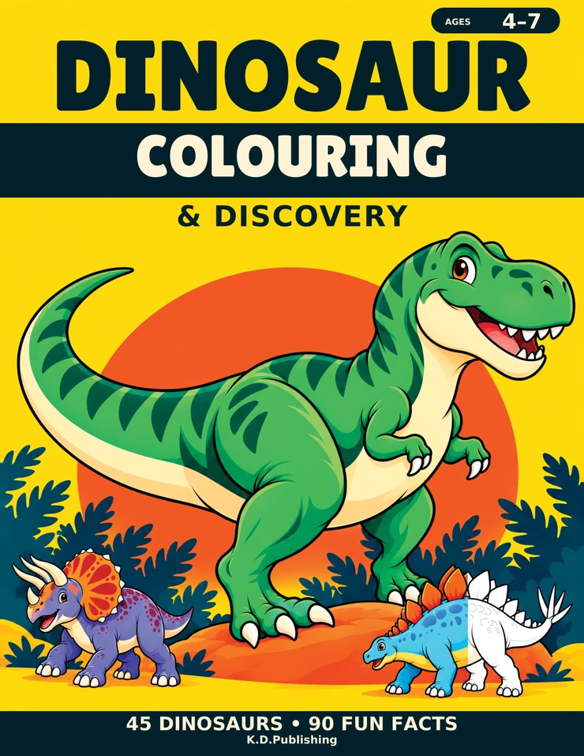

Colouring & Activity Books
Dinosaur Colouring & Discovery
A Prehistoric Adventure for Kids Ages 4–7
Meet 45 dinosaurs through colouring and short facts. Dinosaur Colouring & Discovery brings together easier pictures and more detailed scenes for children ages 4–7 to explore at their own pace. Each dinosaur illustration has two short facts, with blank backs behind the illustration pages. Browse the genuine samples to choose a comfortable starting point; younger children may enjoy sharing the facts with an adult.
Amazon handles your order. Prices and availability may change there.
- 45 dinosaur colouring illustrations, from easier pictures to more detailed scenes.
- 90 short dinosaur facts: two for each dinosaur.
- Single-sided illustration pages with blank backs.
- 100-page paperback in an 8.5 × 11-inch format.
- Format
- Paperback
- Author
- Kyle Dyer
- Collection
- Colouring & Activity Books
- Publisher
- K.D.Publishing
- ASIN
- B0HPTPBR9C
Actual book pages
Look inside
Reduced-size samples from the finished interior. Tap a page for a closer look.
Is this the book for you?
Check today’s price and paperback availability on Amazon UK.